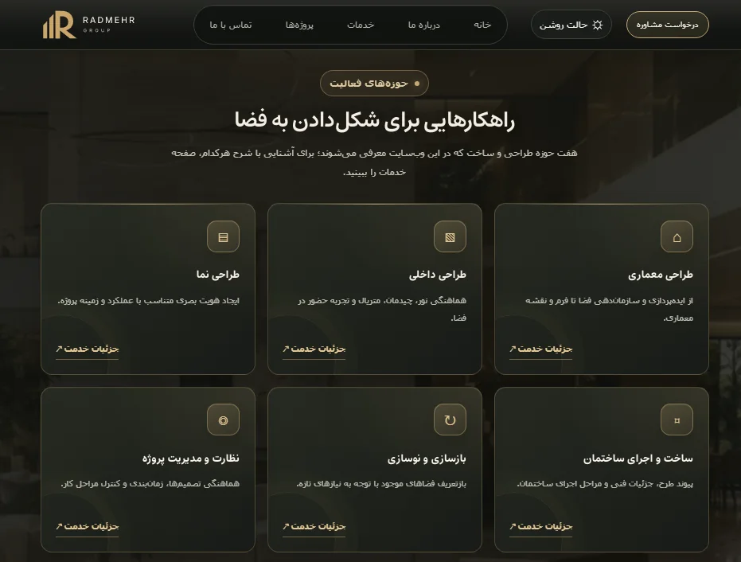
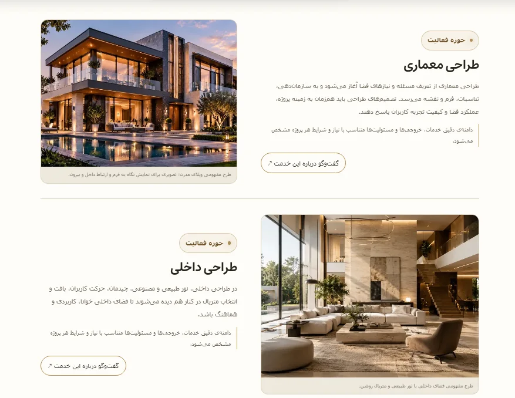
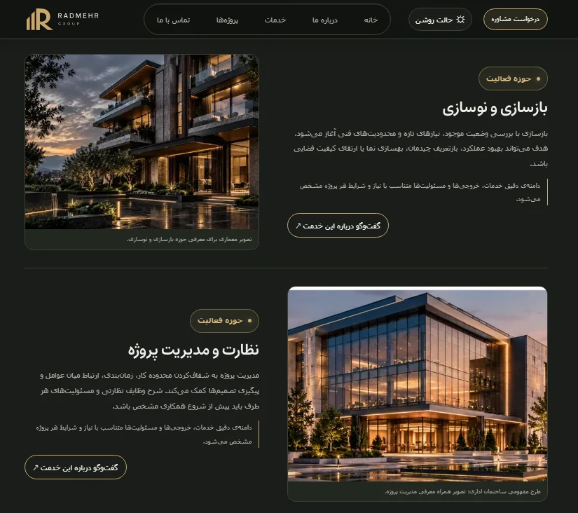
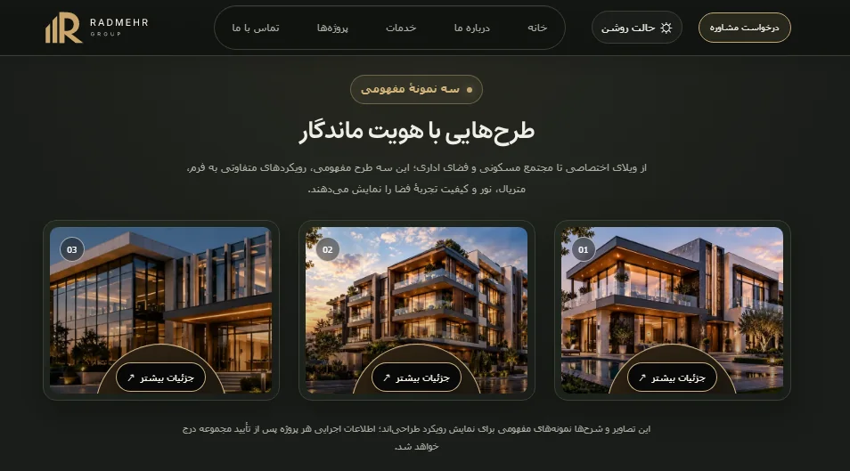
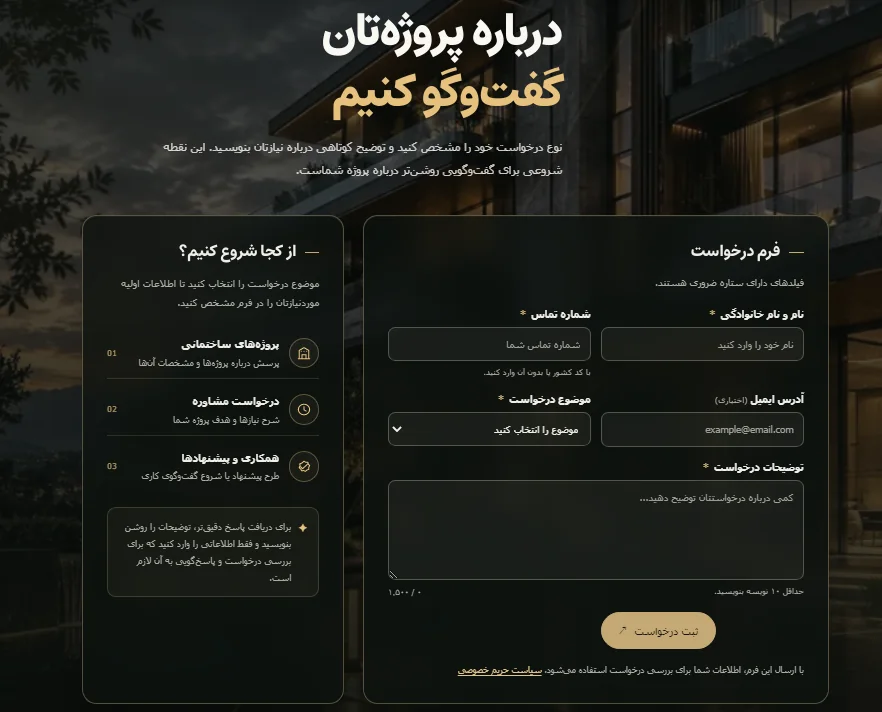
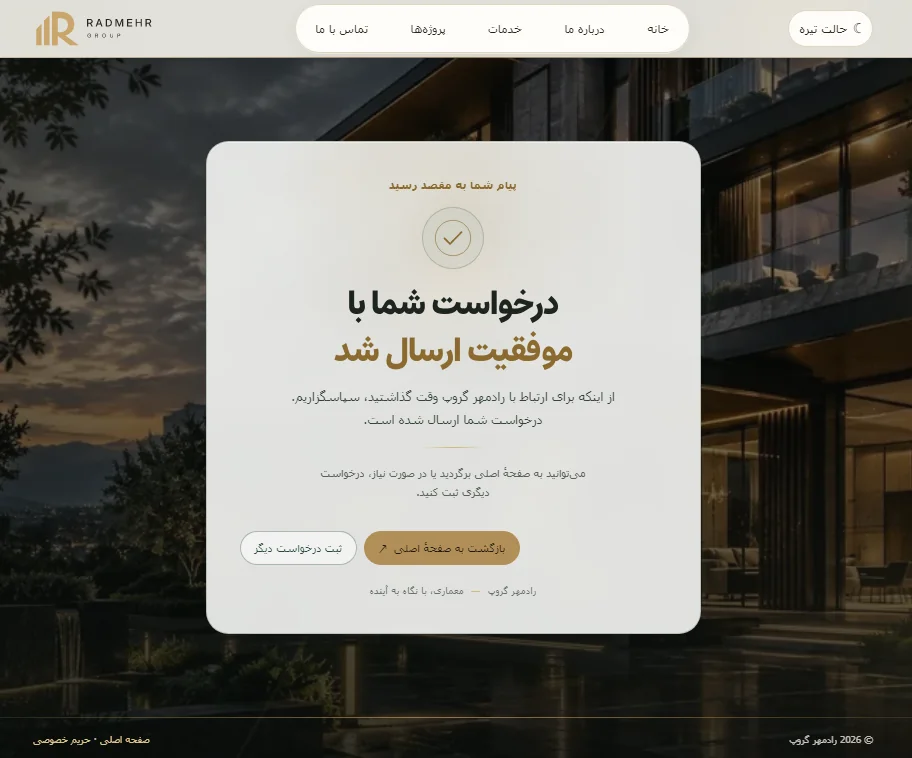
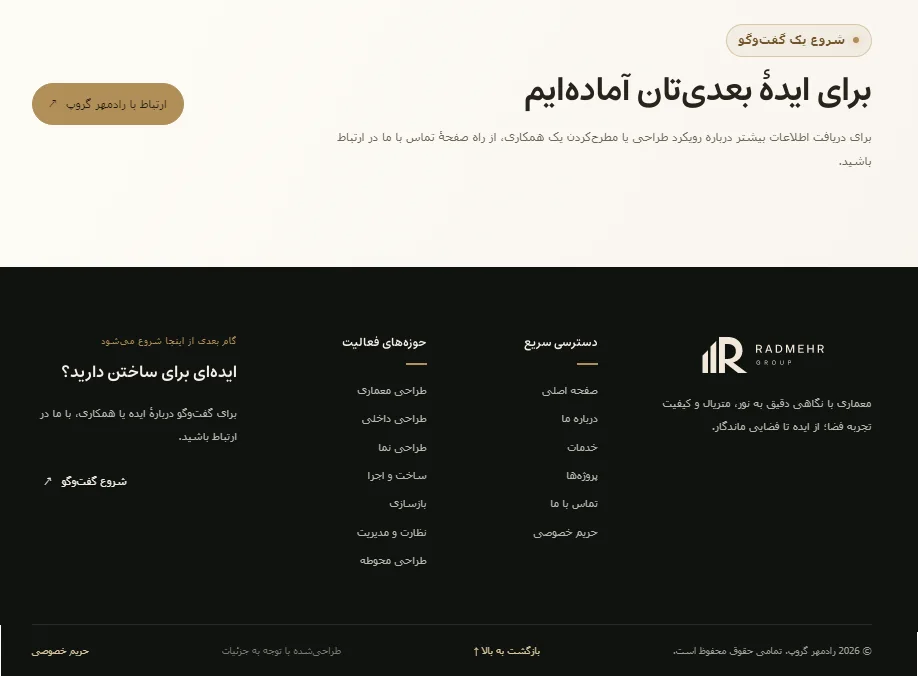

Content architecture
Organising a varied set of services into clear, browsable areas with a visible path between the brand story, services and projects.
Case study · Concept project
Interface design and front-end development for a concept website introducing a multidisciplinary architecture and construction practice, shaped around visual storytelling, clear service structure and an accessible contact journey.

01 / PROJECT OVERVIEW
Radmehr Group is a concept website project for a practice spanning architecture, interior design and construction. The goal of this case study was to shape a clear digital experience around a broad service offering: introduce the brand and its point of view, make services and project examples easy to explore, and guide visitors towards a clear contact path.
Organising a varied set of services into clear, browsable areas with a visible path between the brand story, services and projects.
Using considered contrast, restrained colour and architectural imagery to establish a distinctive, professional tone.
Placing contact information and a request form after the core content, so the next step is easy to recognise.
02 / VISUAL DIRECTION
The visual language is built around two complementary modes: a dark theme that gives depth to imagery and uses gold accents with restraint, and a lighter theme that creates a calmer reading environment for content-led sections. They are not separate identities; both follow the same typographic hierarchy, spacing logic and composition principles.
Architectural photography carries much of the visual weight. The interface supports it with deliberate framing, cards and open space. Headings establish a clear reading order, while supporting copy is kept structured so visitors can scan quickly or pause for more detail.
03 / WEBSITE WALKTHROUGH
Explore the project as a sequence rather than a single screenshot: from the first brand impression to service discovery, project browsing and the contact journey. The gallery brings together 13 captured views from the supplied website build.












04 / INFORMATION ARCHITECTURE
The page structure follows four practical visitor needs: understand the practice, explore its capabilities, review its work and find a way to get in touch.
Architecture and interior design, construction and execution, façade design, renovation, supervision and project management, and landscape design are grouped into recognisable areas to make discovery easier.
The projects page introduces visual examples through dedicated cards, helping visitors form an initial understanding of the practice’s design direction and scope.
The about and design-principles sections add context to the services and imagery, giving visitors a clearer sense of the practice’s approach.
Contact details and a request form create a defined next step. A confirmation view is also included as part of the interface journey.
05 / IMPLEMENTATION DECISIONS
Flexible grids and sizing rules allow content to reorganise across screen widths. On smaller screens, the priorities are readable copy, accessible controls and a logical content order.
The mobile menu, theme switch and in-page navigation are there to simplify access. Motion should guide attention rather than compete with the content.
For this portfolio case study, captured screens are converted to WebP and loaded lazily below the fold to keep the initial page weight under control.
06 / TECHNOLOGY & ROLE
This case study focuses on front-end design and implementation: semantic page structure, styling, client-side interactions and layouts that respond to different screen sizes.
Planning page structure and content paths, implementing the interface, shaping the visual system, developing client-side interactions and reviewing layouts across screen sizes.
END OF CASE STUDY
This project explored the connection between visual identity, information architecture and front-end development — from the first screen to service discovery, project browsing and the contact journey. The result is a concept website that demonstrates design decisions and interface implementation as one connected experience.